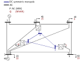

Usage Guide¶
This package was designed to facilitate the management of node and branch data in Excel, allowing users to easily convert the data into CSV format for seamless import into Python for calculations. For a detailed guide on this process, I highly recommend referring to CSV files for importing data.
Alternatively, you can also construct your grid directly in Python. Below is the fundamental approach to creating a grid.
Creating a Grid¶
This is the basic way to create a grid. This grid is the same as running MATACDC case5_stagg and case5_stagg_MTDC [1].

Case 5 Stagg Grid¶

Case 5 Stagg Grid¶
import pyflow_acdc as pyf
pyf.initialize_pyflowacdc()
S_base = 100
AC_node_1 = pyf.Node_AC(node_type='Slack', Voltage_0=1.06, theta_0=0, kV_base=345)
AC_node_2 = pyf.Node_AC(node_type='PV', Voltage_0=1, theta_0=0.1, kV_base=345,Power_Gained=0.4,Power_load=0.2,Reactive_load=0.1)
AC_node_3 = pyf.Node_AC(node_type='PQ', Voltage_0=1, theta_0=0.1, kV_base=345,Power_load=0.45,Reactive_load=0.15)
AC_node_4 = pyf.Node_AC(node_type='PQ', Voltage_0=1, theta_0=0.1, kV_base=345,Power_load=0.4,Reactive_load=0.05)
AC_node_5 = pyf.Node_AC(node_type='PQ', Voltage_0=1, theta_0=0.1, kV_base=345,Power_load=0.6,Reactive_load=0.1)
AC_line_1 = pyf.Line_AC(AC_node_1, AC_node_2,r=0.02,x=0.06,b=0.06,MVA_rating=150)
AC_line_2 = pyf.Line_AC(AC_node_1, AC_node_3,r=0.08,x=0.24,b=0.05,MVA_rating=100)
AC_line_3 = pyf.Line_AC(AC_node_2, AC_node_3,r=0.06,x=0.18,b=0.04,MVA_rating=100)
AC_line_4 = pyf.Line_AC(AC_node_2, AC_node_4,r=0.06,x=0.18,b=0.04,MVA_rating=100)
AC_line_5 = pyf.Line_AC(AC_node_2, AC_node_5,r=0.04,x=0.12,b=0.03,MVA_rating=100)
AC_line_6 = pyf.Line_AC(AC_node_3, AC_node_4,r=0.01,x=0.03,b=0.02,MVA_rating=100)
AC_line_7 = pyf.Line_AC(AC_node_4, AC_node_5,r=0.08,x=0.24,b=0.05,MVA_rating=100)
DC_node_1 = pyf.Node_DC(node_type='P', Voltage_0=1,kV_base=345)
DC_node_2 = pyf.Node_DC(node_type='Slack', Voltage_0=1,kV_base=345)
DC_node_3 = pyf.Node_DC(node_type='P', Voltage_0=1,kV_base=345)
DC_line_1 = pyf.Line_DC(DC_node_1, DC_node_2,r=0.052,MW_rating=100,polarity='sm')
DC_line_2 = pyf.Line_DC(DC_node_2, DC_node_3,r=0.052,MW_rating=100,polarity='sm')
DC_line_3 = pyf.Line_DC(DC_node_1, DC_node_3,r=0.073,MW_rating=100,polarity='sm')
Converter_1 = pyf.AC_DC_converter('PQ', 'PAC' , AC_node_2, DC_node_1, P_AC=-0.6, Q_AC=-0.4, P_DC=0, Transformer_resistance=0.0015, Transformer_reactance=0.121, Phase_Reactor_R=0.0001, Phase_Reactor_X=0.16428, Filter=0.0887, Droop=0, kV_base=345, MVA_max=120)
Converter_2 = pyf.AC_DC_converter('PV', 'Slack', AC_node_3, DC_node_2, Transformer_resistance=0.0015, Transformer_reactance=0.121, Phase_Reactor_R=0.0001, Phase_Reactor_X=0.16428, Filter=0.0887, Droop=0, kV_base=345, MVA_max=120)
Converter_3 = pyf.AC_DC_converter('PQ', 'PAC' , AC_node_5, DC_node_3, P_AC=0.35, Q_AC=0.05, Transformer_resistance=0.0015, Transformer_reactance=0.121, Phase_Reactor_R=0.0001, Phase_Reactor_X=0.16428, Filter=0.0887, Droop=0, kV_base=345, MVA_max=120)
AC_nodes = [AC_node_1, AC_node_2, AC_node_3, AC_node_4, AC_node_5]
DC_nodes = [DC_node_1, DC_node_2, DC_node_3]
AC_lines = [AC_line_1, AC_line_2, AC_line_3, AC_line_4, AC_line_5, AC_line_6, AC_line_7]
DC_lines = [DC_line_1, DC_line_2, DC_line_3]
Converters = [Converter_1, Converter_2, Converter_3]
grid = pyf.Grid(S_base,AC_nodes, AC_lines,Converters,DC_nodes, DC_lines)
res= pyf.Results(grid,decimals=3)
time,tol,ps_iterations = pyf.ACDC_sequential(grid)
res.all()
Adding Components¶
Grids can also be built in the opposite order, creating the core grid first, then adding elements.
import pyflow_acdc as pyf
pyf.initialize_pyflowacdc()
grid = pyf.Grid(100)
res = pyf.Results(grid)
ac_node_1 = pyf.add_AC_node(grid,node_type='Slack', Voltage_0=1.06, theta_0=0, kV_base=345)
ac_node_2 = pyf.add_AC_node(grid,node_type='PV', Voltage_0=1, theta_0=0.1, kV_base=345,Power_Gained=0.4,Power_load=0.2,Reactive_load=0.1)
ac_node_3 = pyf.add_AC_node(grid,node_type='PQ', Voltage_0=1, theta_0=0.1, kV_base=345,Power_load=0.45,Reactive_load=0.15)
ac_node_4 = pyf.add_AC_node(grid,node_type='PQ', Voltage_0=1, theta_0=0.1, kV_base=345,Power_load=0.4,Reactive_load=0.05)
ac_node_5 = pyf.add_AC_node(grid,node_type='PQ', Voltage_0=1, theta_0=0.1, kV_base=345,Power_load=0.6,Reactive_load=0.1)
ac_line_1 = pyf.add_line_AC(grid,ac_node_1,ac_node_2,r=0.02,x=0.06,b=0.06,MVA_rating=150)
ac_line_2 = pyf.add_line_AC(grid,ac_node_1,ac_node_3,r=0.08,x=0.24,b=0.05,MVA_rating=100)
ac_line_3 = pyf.add_line_AC(grid,ac_node_2,ac_node_3,r=0.06,x=0.18,b=0.04,MVA_rating=100)
ac_line_4 = pyf.add_line_AC(grid,ac_node_2,ac_node_4,r=0.06,x=0.18,b=0.04,MVA_rating=100)
ac_line_5 = pyf.add_line_AC(grid,ac_node_2,ac_node_5,r=0.04,x=0.12,b=0.03,MVA_rating=100)
ac_line_6 = pyf.add_line_AC(grid,ac_node_3,ac_node_4,r=0.01,x=0.03,b=0.02,MVA_rating=100)
ac_line_7 = pyf.add_line_AC(grid,ac_node_4,ac_node_5,r=0.08,x=0.24,b=0.05,MVA_rating=100)
dc_node_1 = pyf.add_DC_node(grid,node_type='P', Voltage_0=1,kV_base=345)
dc_node_2 = pyf.add_DC_node(grid,node_type='Slack', Voltage_0=1,kV_base=345)
dc_node_3 = pyf.add_DC_node(grid,node_type='P', Voltage_0=1,kV_base=345)
dc_line_1 = pyf.add_line_DC(grid,dc_node_1,dc_node_2,r=0.052,MW_rating=100,polarity='sm')
dc_line_2 = pyf.add_line_DC(grid,dc_node_2,dc_node_3,r=0.052,MW_rating=100,polarity='sm')
dc_line_3 = pyf.add_line_DC(grid,dc_node_1,dc_node_3,r=0.073,MW_rating=100,polarity='sm')
converter_1 = pyf.add_ACDC_converter(grid,ac_node_2, dc_node_1,'PQ', 'PAC' , P_AC_MW=-60, Q_AC_MVA=-40, Transformer_resistance=0.0015, Transformer_reactance=0.121, Phase_Reactor_R=0.0001, Phase_Reactor_X=0.16428, Filter=0.0887, Droop=0, kV_base=345, MVA_max=120)
converter_2 = pyf.add_ACDC_converter(grid,ac_node_3, dc_node_2,'PV', 'Slack', Transformer_resistance=0.0015, Transformer_reactance=0.121, Phase_Reactor_R=0.0001, Phase_Reactor_X=0.16428, Filter=0.0887, Droop=0, kV_base=345, MVA_max=120)
converter_3 = pyf.add_ACDC_converter(grid,ac_node_5, dc_node_3,'PQ', 'PAC' , P_AC_MW=35, Q_AC_MVA=5, Transformer_resistance=0.0015, Transformer_reactance=0.121, Phase_Reactor_R=0.0001, Phase_Reactor_X=0.16428, Filter=0.0887, Droop=0, kV_base=345, MVA_max=120)
time,tol,ps_iterations = pyf.ACDC_sequential(grid)
res.all()
Running a Power Flow¶
Examples of running a power flow…
import pyflow_acdc as pyf
[grid,res]=pyf.PEI_grid()
time,tol,ps_iterations = pyf.ACDC_sequential(grid,QLimit=False)
res.all()
print ('------')
Running an Optimal Power Flow¶
To run this, you need to have the OPF optional installed. This includes the following packages:
pyomo
ipopt
Quick Example
import pyflow_acdc as pyf
obj = {'Energy_cost' : 1}
[grid,res]=pyf.case39_acdc()
model, timing_info, model_res,solver_stats=pyf.Optimal_PF(grid,ObjRule=obj)
res.all()
print ('------')
It is important that for optimal power flow generators are added to the grid before running.
Detailed Example
Taking the Case 5 from the IEEE PES Power Grid Library [2].
import pyflow_acdc as pyf
import pandas as pd
S_base=100
nodes_AC_data = [
{'type': 'PV', 'Voltage_0': 1.0, 'theta_0': 0.0, 'kV_base': 230.0, 'Power_Gained': 0, 'Reactive_Gained': 0, 'Power_load': 0.0, 'Reactive_load': 0.0, 'Node_id': '1.0'},
{'type': 'PQ', 'Voltage_0': 1.0, 'theta_0': 0.0, 'kV_base': 230.0, 'Power_Gained': 0, 'Reactive_Gained': 0, 'Power_load': 3.0, 'Reactive_load': 0.9861, 'Node_id': '2.0'},
{'type': 'PV', 'Voltage_0': 1.0, 'theta_0': 0.0, 'kV_base': 230.0, 'Power_Gained': 0, 'Reactive_Gained': 0, 'Power_load': 3.0, 'Reactive_load': 0.9861, 'Node_id': '3.0'},
{'type': 'Slack', 'Voltage_0': 1.0, 'theta_0': 0.0, 'kV_base': 230.0, 'Power_Gained': 0, 'Reactive_Gained': 0, 'Power_load': 4.0, 'Reactive_load': 1.3147, 'Node_id': '4.0'},
{'type': 'PV', 'Voltage_0': 1.0, 'theta_0': 0.0, 'kV_base': 230.0, 'Power_Gained': 0, 'Reactive_Gained': 0, 'Power_load': 0.0, 'Reactive_load': 0.0, 'Node_id': '5.0'}
]
nodes_AC = pd.DataFrame(nodes_AC_data)
lines_AC_data = [
{'fromNode': '1.0', 'toNode': '2.0', 'r': 0.00281, 'x': 0.0281, 'g': 0, 'b': 0.00712, 'MVA_rating': 400.0, 'kV_base': 230.0, 'Line_id': '1'},
{'fromNode': '1.0', 'toNode': '4.0', 'r': 0.00304, 'x': 0.0304, 'g': 0, 'b': 0.00658, 'MVA_rating': 426.0, 'kV_base': 230.0, 'Line_id': '2'},
{'fromNode': '1.0', 'toNode': '5.0', 'r': 0.00064, 'x': 0.0064, 'g': 0, 'b': 0.03126, 'MVA_rating': 426.0, 'kV_base': 230.0, 'Line_id': '3'},
{'fromNode': '2.0', 'toNode': '3.0', 'r': 0.00108, 'x': 0.0108, 'g': 0, 'b': 0.01852, 'MVA_rating': 426.0, 'kV_base': 230.0, 'Line_id': '4'},
{'fromNode': '3.0', 'toNode': '4.0', 'r': 0.00297, 'x': 0.0297, 'g': 0, 'b': 0.00674, 'MVA_rating': 426.0, 'kV_base': 230.0, 'Line_id': '5'},
{'fromNode': '4.0', 'toNode': '5.0', 'r': 0.00297, 'x': 0.0297, 'g': 0, 'b': 0.00674, 'MVA_rating': 240.0, 'kV_base': 230.0, 'Line_id': '6'}
]
lines_AC = pd.DataFrame(lines_AC_data)
# Create the grid
[grid, res] = pyf.Create_grid_from_data(S_base, nodes_AC, lines_AC, data_in = 'pu')
# Add Generators
pyf.add_gen(grid, '1.0', '1', lf=14, qf=0, MWmax=40.0, MWmin=0.0, MVArmax=30.0, MVArmin=-30.0, PsetMW=20.0, QsetMVA=0.0)
pyf.add_gen(grid, '1.0', '2', lf=15, qf=0, MWmax=170.0, MWmin=0.0, MVArmax=127.5, MVArmin=-127.5, PsetMW=85.0, QsetMVA=0.0)
pyf.add_gen(grid, '3.0', '3', lf=30, qf=0, MWmax=520.0, MWmin=0.0, MVArmax=390.0, MVArmin=-390.0, PsetMW=260.0, QsetMVA=0.0)
pyf.add_gen(grid, '4.0', '4', lf=40, qf=0, MWmax=200.0, MWmin=0.0, MVArmax=150.0, MVArmin=-150.0, PsetMW=100.0, QsetMVA=0.0)
pyf.add_gen(grid, '5.0', '5', lf=10, qf=0, MWmax=600.0, MWmin=0.0, MVArmax=450.0, MVArmin=-450.0, PsetMW=300.0, QsetMVA=0.0)
obj = {'Energy_cost' : 1}
model, timing_info, model_res,solver_stats=pyf.Optimal_PF(grid,ObjRule=obj)
res.all()
print ('------')
Available test cases:¶
For Power Flow: - pyf.Stagg5MATACDC() - pyf.PEI_grid() - pyf.pglib_opf_case24_ieee_rts()
For Optimal Power Flow:
pyf.case_ACTIVSg2000()
pyf.case24_3zones_acdc()
pyf.case39_acdc()
pyf.case39()
pyf.case118()
pyf.NS_MTDC()
pyf.NS_SII()
pyf.pglib_opf_case5_pjm()
pyf.pglib_opf_case14_ieee()
pyf.pglib_opf_case300_ieee()
pyf.pglib_opf_case588_sdet_acdc()
pyf.Stagg5MATACDC()
References